Solar Sail Mechanism
Solar sails utilize the radiation pressure exerted by sunlight on large, highly reflective mirrors to propel spacecraft without fuel. This capability enables long-duration missions that would be impossible with chemical propulsion due to the tyranny of the rocket equation.
However, the primary engineering challenge especially for small satellites like CubeSats is packaging a massive membrane structure into a compact 75-80mm diameter volume fitting perfectly within the "tuna can" payload constraints and deploying it reliably without tearing, snagging, or jamming. This project explores the mechanical design of such a compact, deployable boom system.
Design Evolution: The Quad Sail
The initial design ("Revision 1") utilized a 4-boom configuration (Quad Sail) to maximize the deployed surface area and maintain symmetry. The booms were thin-walled composite slit-tubes, designed to flatten completely and roll around a central hub.
Although the Quad Sail offers significantly more surface area for propulsion compared to a Tri-Boom design (for a given boom length), the mechanical limitations of the boom cross-section dictated a change. The strain limits of the composite material required a larger coiling radius than the Quad hub could accommodate within the CubeSat form factor.
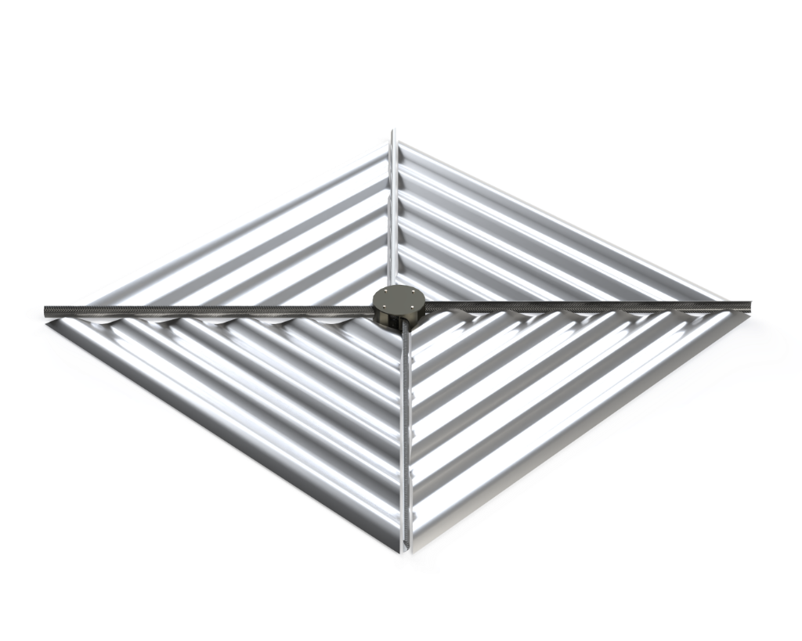
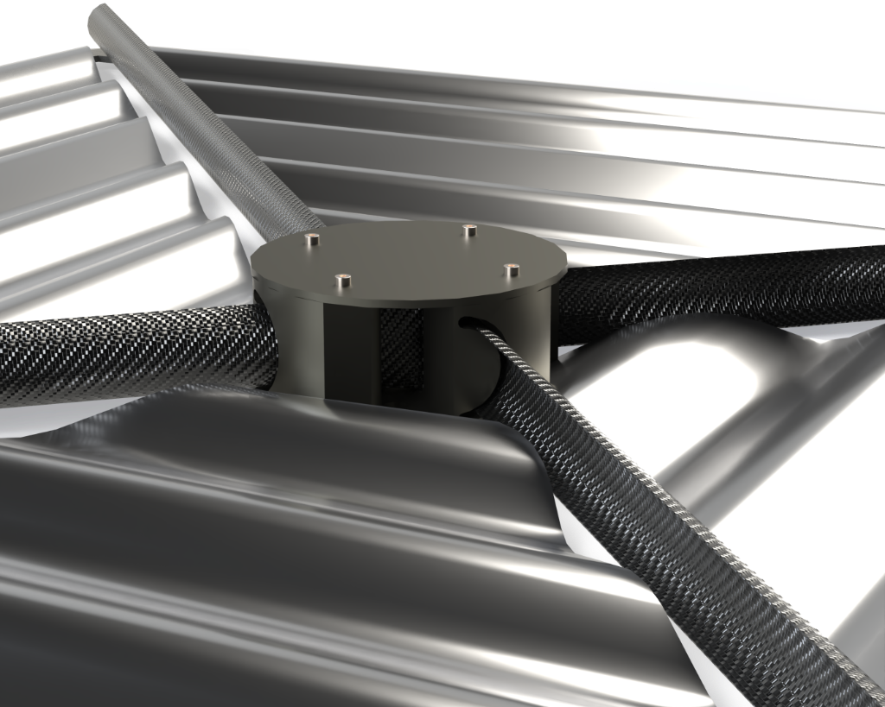
The "Blossoming" Problem
A critical failure mode known as "blossoming" occurred during deployment. This is a classic stored strain energy failure where the coil attempts to unwind faster than it can exit the housing mechanism.
Because the boom thickness was slightly greater than standard space-grade specs, the stored potential energy was higher than anticipated. In the confined space of the hub, this caused the coil to expand radially outward, pressing hard against the casing walls and effectively locking the entire system up instantly.
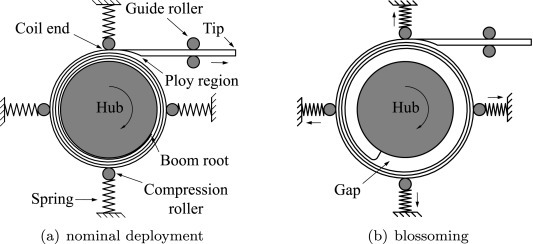
Additionally, the 3D-printed cross-section guide created excessive friction, further hindering smooth deployment.
Mitigation Strategies
There are several established methods to mitigate blossoming, as researched by Caltech and others in the field. These include radial force stabilization (using rollers to constrain the coil) and pressure stabilization.
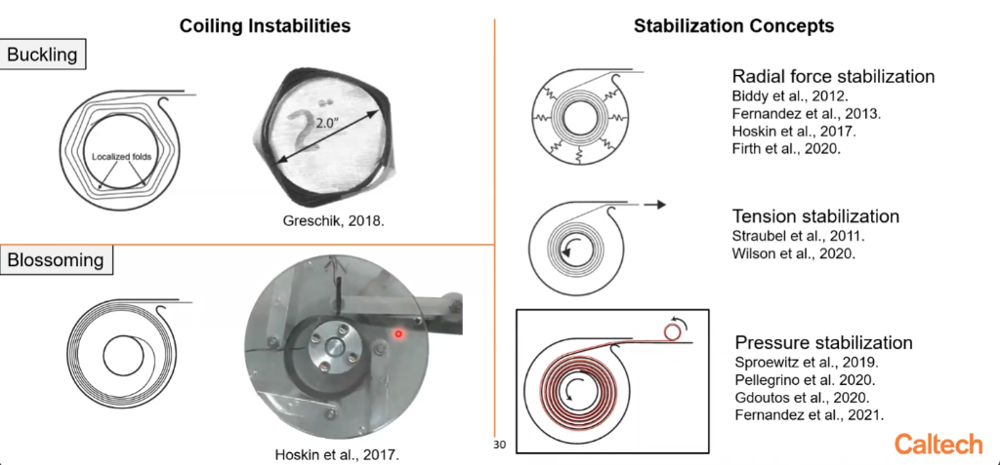
Another effective technique involved modifying the motor control logic. By rapidly running the motor backwards to tighten the coil and then slowly feeding it forward, we could momentarily break the static friction and prevent the "stick-slip" behavior that leads to blossoming.
Future Improvement Note: While the current prototype relied on manual control to manage this deployment sequence, a robust flight version would likely require a closed-loop stepper motor algorithm. This would allow for precise real-time adjustment of the tension and feed rate to automatically counteract blossoming onset.
Revision 2: Tri-Boom & Carbon Rods
To resolve these issues, the design was simplified to a 3-boom configuration. This geometric change wasn't just an aesthetic choice; it increased the available stowage volume for each boom by over 30%, giving the mechanism much-needed "breathing room."
Crucially, I replaced the high-friction 3D printed guides with 3mm solid Carbon Fiber rods. This shifted the tribology from a high-friction surface contact to a low-friction line contact.
Since the booms are also carbon composite, the Carbon-on-Carbon interface offers a naturally low coefficient of friction. Combined with the inherent stiffness of the rods, this reduced the deployment force requirements drasticallly. The rods are positioned precisely to constrain the coil, forcing it to deploy tangentially and physically preventing the "blossoming" expansion.

Prototype Deployment Sequence
Click play to see the frame-by-frame deployment of the physical prototype.

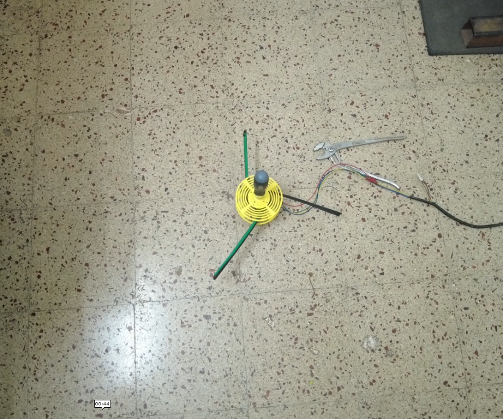
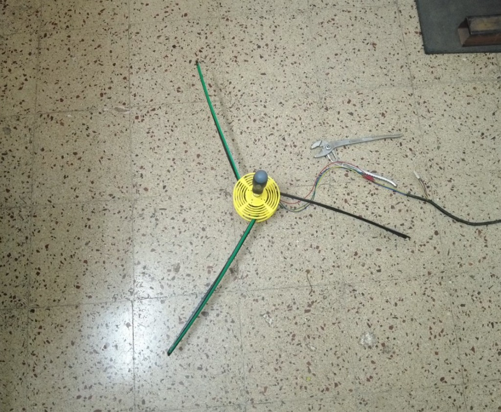
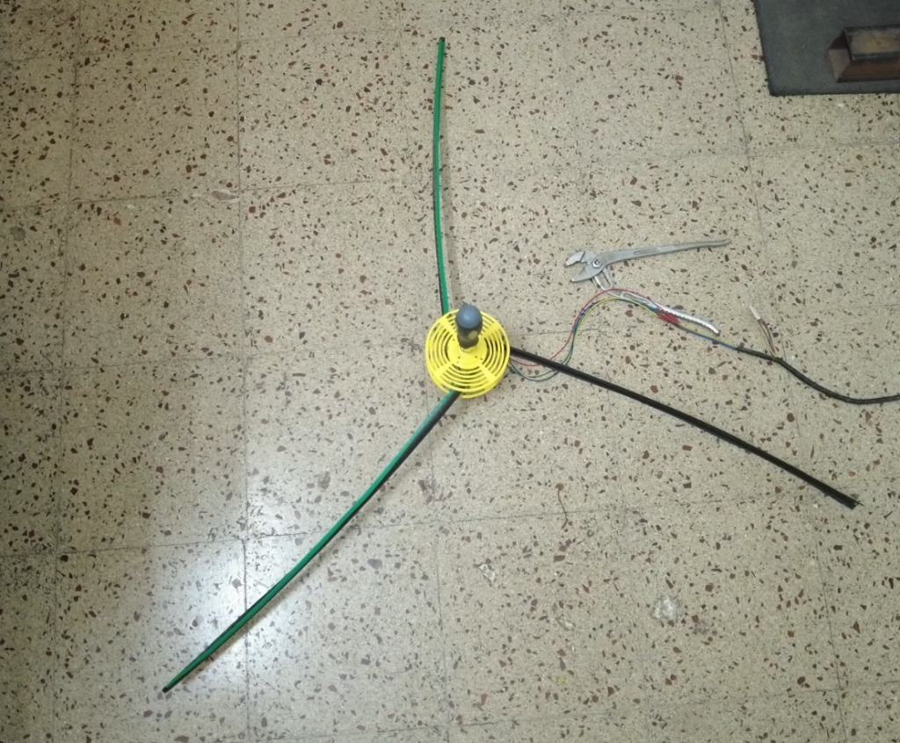
Render Gallery
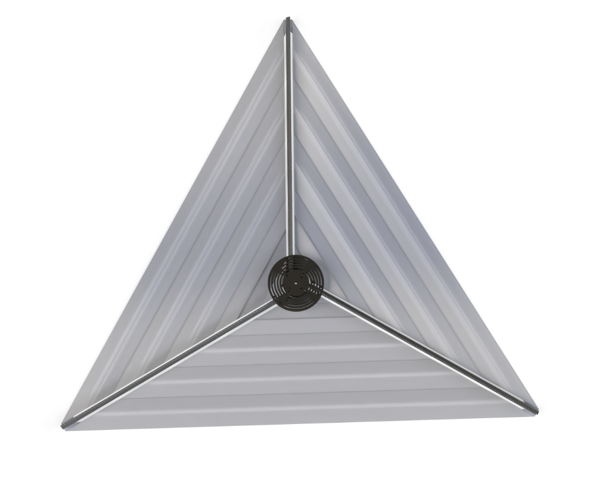
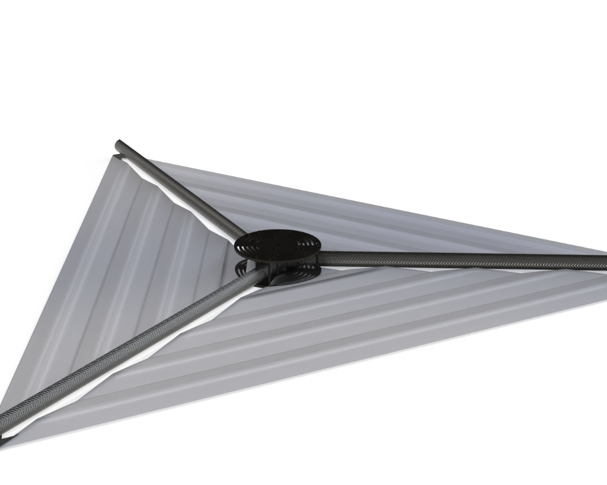
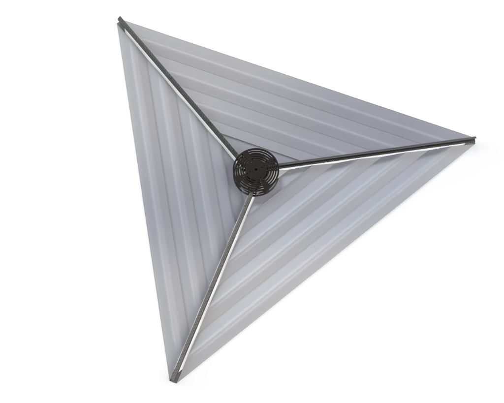
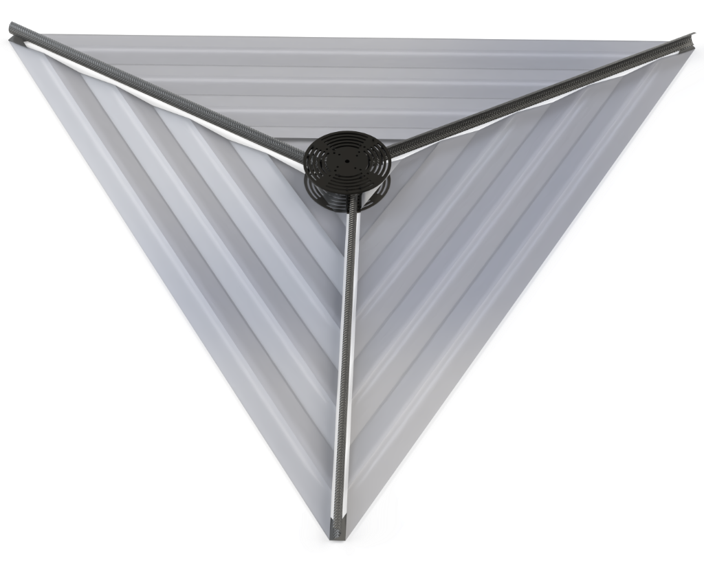
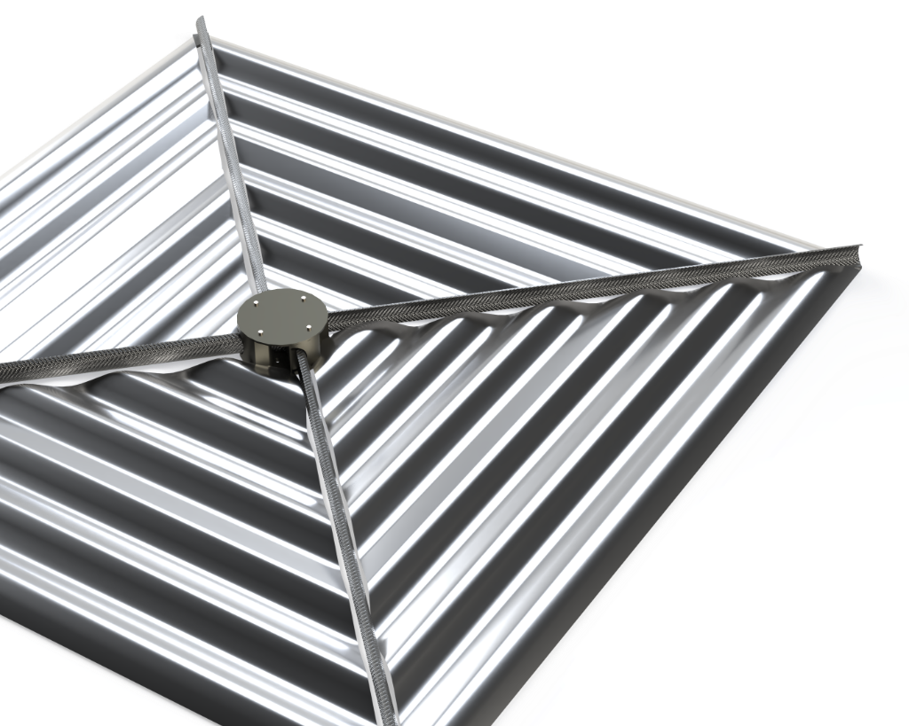
Note: Please excuse the visual artifacts in these renders. Simulating thin-film mechanics is a complex beast!